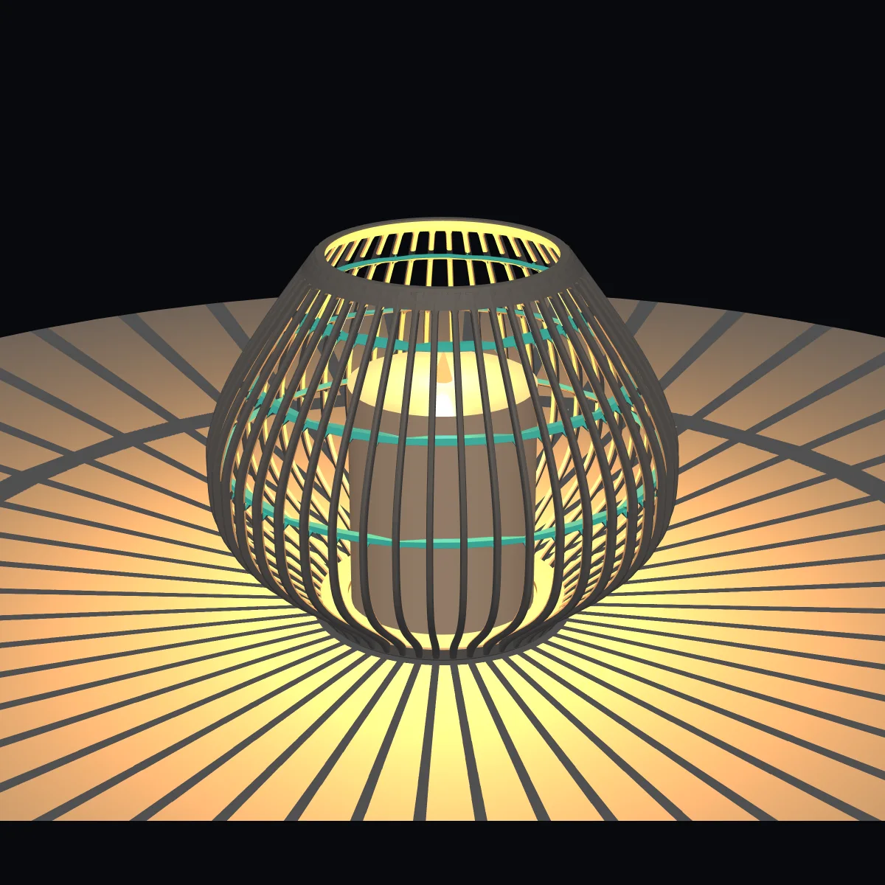
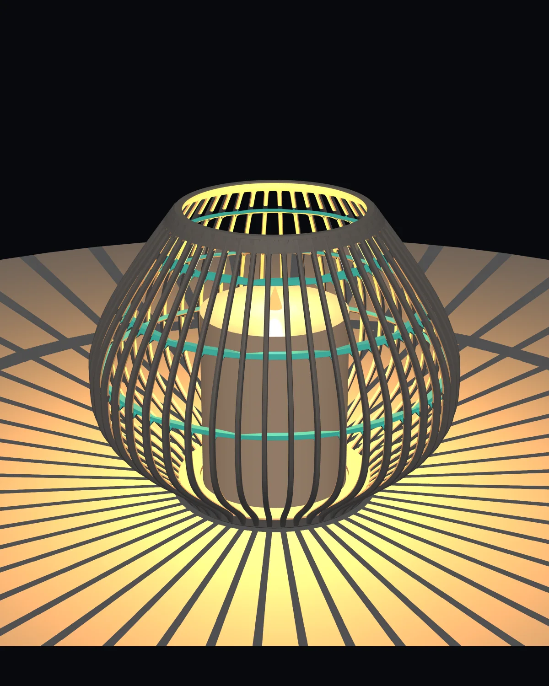
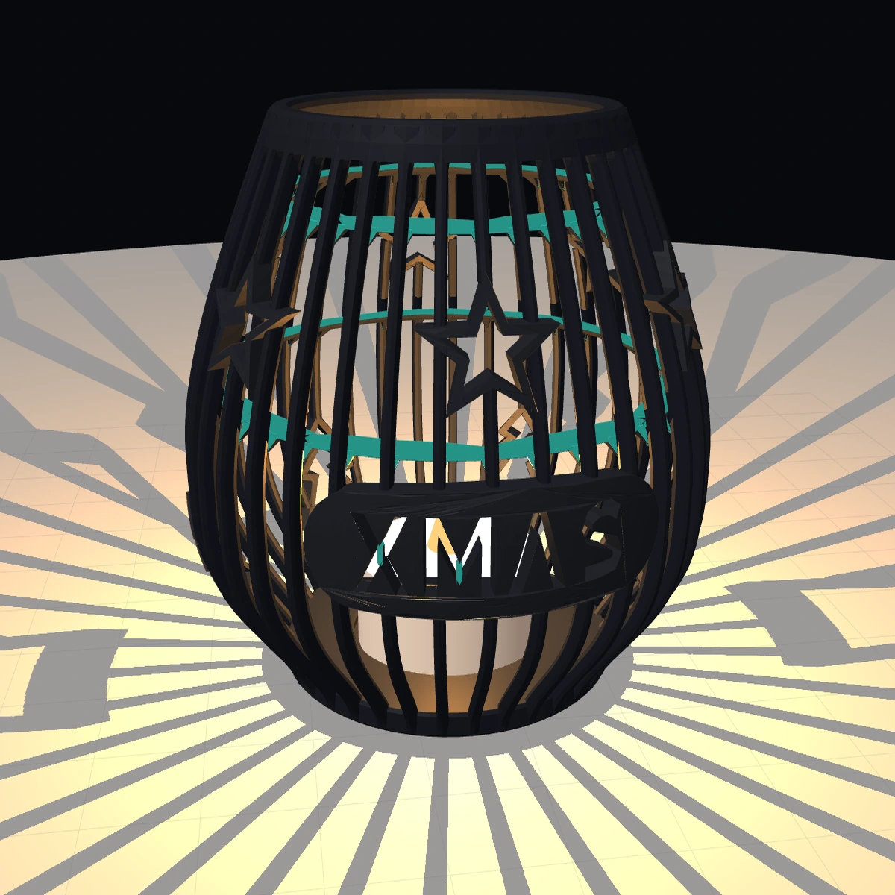
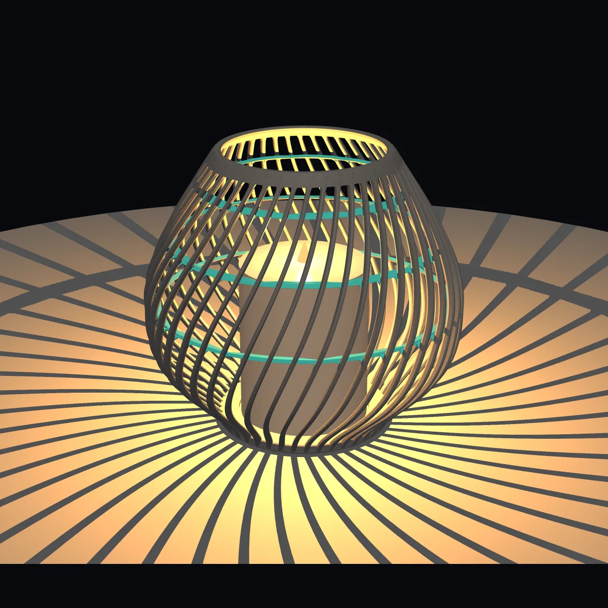
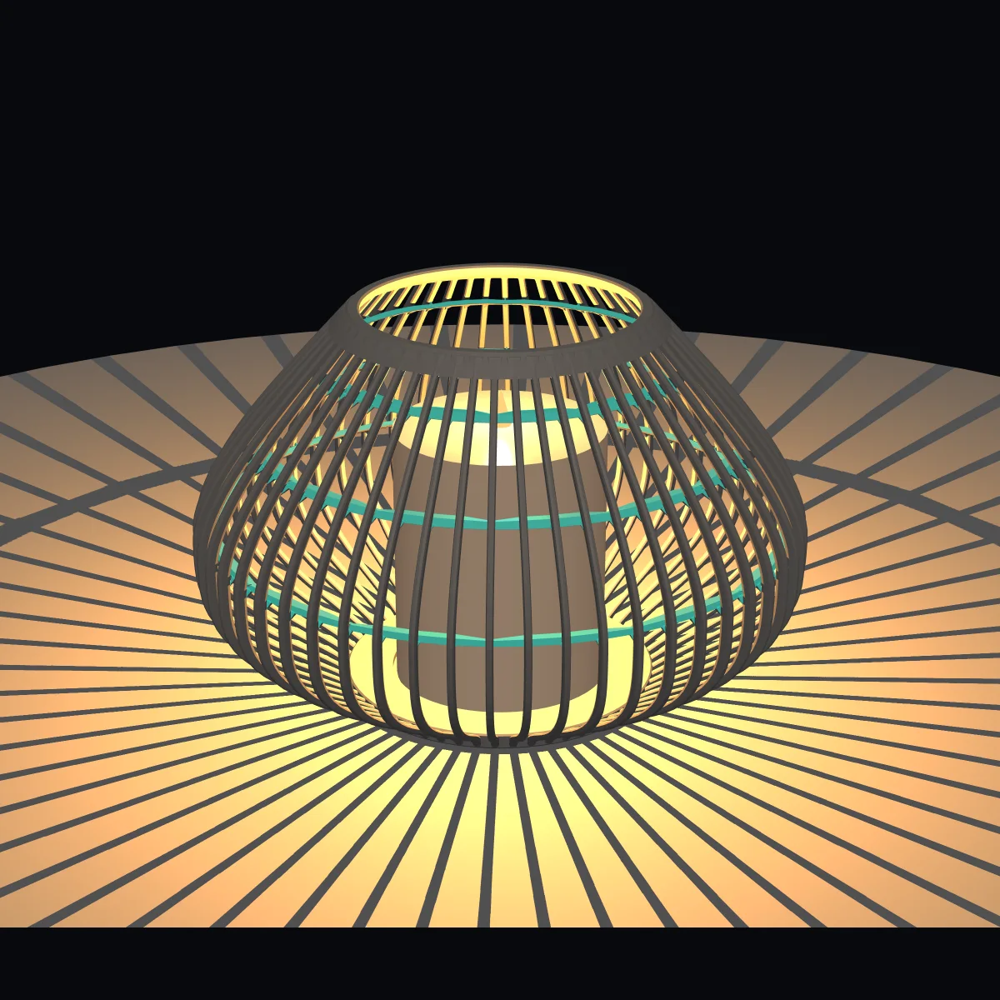
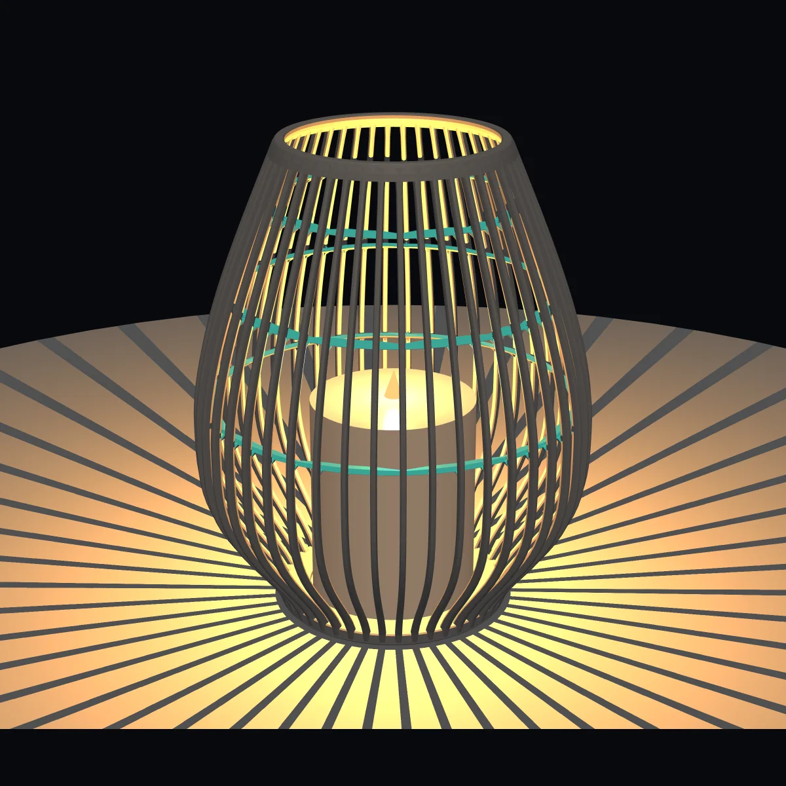
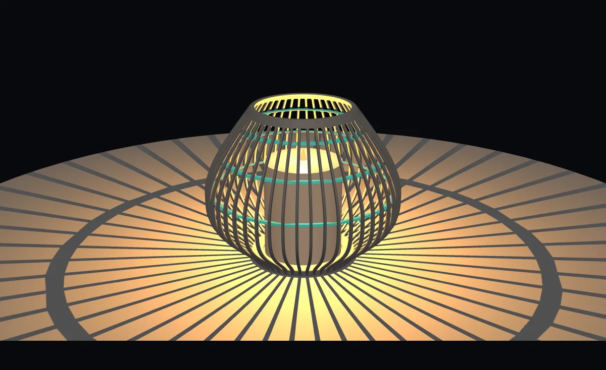

Timeless
Classic
Evenly curved ribs and no decoration. A calm, balanced lantern, and a good place to learn how the parameters behave.
Design it in your browser, watch it take shape live in 3D, export it as an STL file and print it yourself.

Lumenrib is a parametric lantern designer that runs in your browser. You assemble a lantern from individual slender ribs that curve outwards, and you decide how tall it is, how wide it bulges and how many ribs it has.
When you are happy with the shape, you download it as an STL file and print it on an FDM 3D printer such as the Bambu Lab A1. No account, no cloud — just the tool and your printer.

Motifs sit directly on the ribs as raised relief. You choose how many there are, how large they are, how high up the lantern they sit and how deep the relief is.
Add a second or third row of motifs and the lantern throws a richer pattern of light and shadow once a candle or LED is inside.

Twist the ribs around the vertical axis and a straight, calm lantern becomes a flowing one. The twist angle runs from −90° to +90°, so you can turn it either way.
Combined with the curve tension of the bulge, the same ribs give you very different silhouettes.

Evenly curved ribs and no decoration. A calm, balanced lantern, and a good place to learn how the parameters behave.
Festive motifs in two rows around the lantern. They throw a pattern of shadows once the light is on.

A low, broad body with more ribs and a generous bulge. Made for a table or a shelf.
The ribs wind around the lantern at a 45° angle. The shape feels like it is in motion, even standing still.

A taller, more slender silhouette with a narrower bulge. It makes room for a long candle.
Every preset is only a starting point. Once you have picked one, every parameter stays freely adjustable.
Open the configurator and look at the lantern in 3D. Drag to turn it, scroll to zoom in.
Start from one of five presets and change height, bulge, ribs, twist, motifs and candle compartment until it suits you.
One click downloads your lantern as an STL file, ready for your slicer.
Slice it and print it on your FDM printer, for example a Bambu Lab A1.
Height, belly diameter, base plate diameter and thickness, and the inner diameter and height of the top ring.
Number of ribs, rib width and depth, and the curve tension that shapes the bulge.
Turn the ribs around the vertical axis by the twist angle, in either direction.
Decoration on the ribs: number, size, height, relief depth and rows of motifs.
Candle diameter and height, clearance to the wall and the recess in the base.
Number, width and thickness of the stabilisers, plus the shape of their neck.
Preview your lantern with light and cast shadows, and choose its colour.
Download the finished lantern as an STL file for any slicer.
Lumenrib is a tool, not a shop. It does one thing: it helps you shape a lantern that you can print at home.
Everything you see in the preview is what ends up in the STL file, so you can judge proportions, ribs and motifs before you print anything.

Hold the mouse button and drag to turn the lantern. Scroll to zoom in and out.
Switch on night mode to see the lantern glow and cast shadows, then switch it off again to check the shape in daylight.
Choose a colour for the preview, and adjust any value until the lantern looks the way you want it to.
The lantern is built around a real candle or LED light. Candle diameter and height are adjustable, so the compartment fits what you have.
Open the configurator, pick a preset and make it yours. You do not need an account.